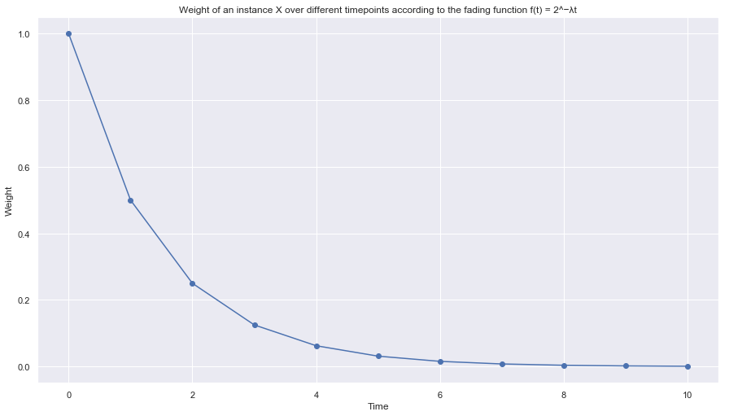

Fading Function
For a damped window model, consider the fading function f(t) = 2^−λt, where t is the time-point and λ is a user-defined parameter. What is the weight of an instance x observed at time-point T(T > t)? Calculate the weight of the instance x at t0, t1, t2, t3, t4 since time t0. Plot a graph of hte weight v/s the time-point.
import pandas as pd
import matplotlib.pyplot as plt
import seaborn as sns
sns.set()
lam = 1
def f(t):
return 2**(-lam*t)
timepoints = [0, 1, 2, 3, 4, 5, 6, 7, 8, 9, 10]
weights = []
for timepoint in timepoints:
weight = f(timepoint)
weights.append(weight)
df = pd.DataFrame(weights, columns=[['Weight']])
df['Timepoint'] = df.index
df
| Weight | Timepoint | |
|---|---|---|
| 0 | 1.000000 | 0 |
| 1 | 0.500000 | 1 |
| 2 | 0.250000 | 2 |
| 3 | 0.125000 | 3 |
| 4 | 0.062500 | 4 |
| 5 | 0.031250 | 5 |
| 6 | 0.015625 | 6 |
| 7 | 0.007812 | 7 |
| 8 | 0.003906 | 8 |
| 9 | 0.001953 | 9 |
| 10 | 0.000977 | 10 |
fig, ax = plt.subplots()
fig.set_size_inches(15, 8.27)
plt.title('Weight of an instance X over different timepoints according to the fading function f(t) = 2^−λt')
plt.xlabel('Time')
plt.ylabel('Weight')
plt.plot(df['Timepoint'].values, df['Weight'].values, marker='o')
[<matplotlib.lines.Line2D at 0x138043f0>]
